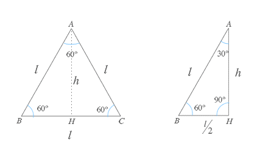
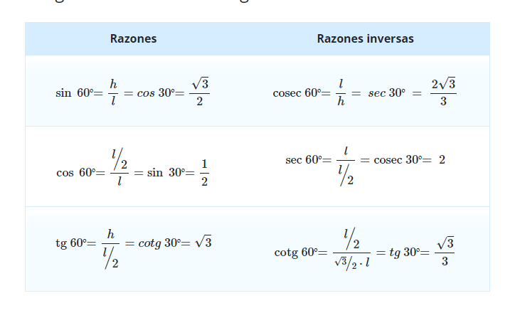

Ángulos notable de 60 grados
En la actualidad para obtener el valor de una razón trigonométrica a partir de un ángulo dado, simplemente se utiliza una calculadora en la cual se introduce el valor del ángulo dado y se evalúa en la relación trigonométrica requerida. Los valores de estas razones también se pueden obtener utilizando triángulos rectángulos, cuyos ángulos serán a los que se les quiere encontrar sus razones trigonométricas. En ocasiones este método es frustrante, ya que para crear los triángulos se deben realizar bastantes operaciones. Sin embargo, existen ángulos en los que son un poco más sencillos; a estos ángulos se les conoce como ángulos notables.
En las matemáticas y específicamente en la trigonometría, la palabra “notable” se utiliza para referirnos a procesos o valores que están bien definidos o bastante comunes, y por ende, se reconocen y memorizan fácilmente. En este sentido, los ángulos notables son aquellos que tienen valores que aparecen seguido en la vida cotidiana. Estos ángulos son los de 30°, 45° y 60° se les conoce como ángulos notables. Ya que aparecen a menudo en nuestra vida cotidiana, y resulta de gran utilidad aprender de memoria los valores de sus razones trigonométricas. De hecho, es posible calcular el valor de las razones de otros ángulos a partir de estas.
Ejemplo
A continuación, te daré un ejemplo.
Podemos encontrar las razones trigonométricas del ángulo de 60° usando el mismo triángulo que usamos para encontrar las razones trigonométricas de 30°.

A partir de esta figura y aplicando la definición de seno, coseno y tangente de cualquier ángulo agudo podemos obtener las razones trigonométricas de los ángulos de 30º y 60º (o sus equivalentes en radianes).
